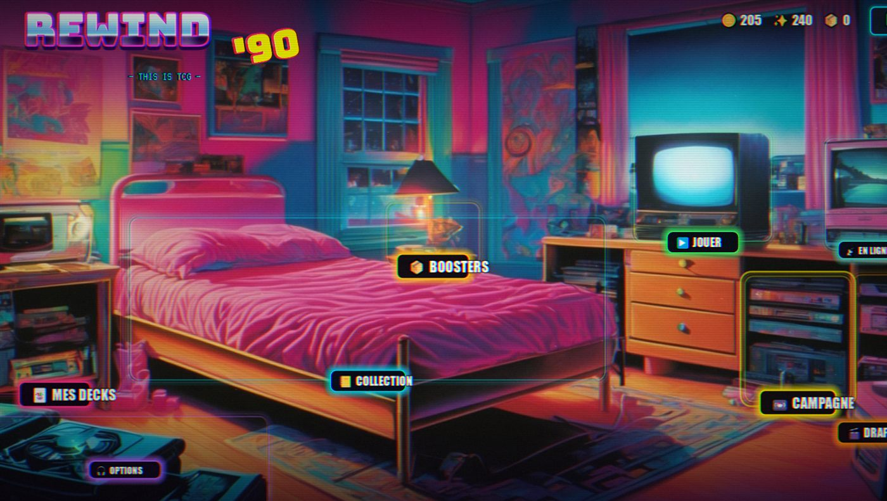

This is TCG — un jeu de cartes à collectionner qui rejoue les années 90 : campagne solo en 10 cassettes, boosters à ouvrir, draft « Vidéoclub », et du multijoueur en ligne entre potes. Le menu principal est la chambre d'ado de 1996 — chaque meuble est un mode de jeu.
Fichier .zip, aucune installation. Windows uniquement.

État : prototype jouable complet. 6 factions, 309 cartes + 35 jetons, contre l'IA (3 niveaux), à deux sur le même PC ou en ligne. Boosters, collection, fabrication, decks perso, campagne et draft en place. Encore en rodage : multijoueur, booster de fin de partie et connexion Google restent à éprouver en conditions réelles.
Set de départ + 2 extensions (« Volume 2 » et « Volume 3 »), 35 jetons, vrais noms et vraies stars des années 90.
10 cassettes de 1990 à 1999, 30 combats, boss final LE BUG. Se débloque dès un deck perso de 30 cartes complet.
30 choix parmi 3 cartes, puis des matchs jusqu'à 3 défaites ou 12 victoires.
Paquet en aluminium qui se charge et se déchire, holo/reverse holo/full art/1ère édition/misprint, révélation plein écran pour les légendaires.
Héberge ou rejoins par code à 4 lettres, serveur autoritaire, classement victoires/défaites, revanche en un clic.
La sauvegarde locale suffit à elle seule ; la connexion Google (optionnelle) ajoute une copie de secours sur ton Drive.
Le jeu n'est pas signé numériquement : Windows peut afficher un avertissement SmartScreen au premier lancement.
REWIND90.exe.